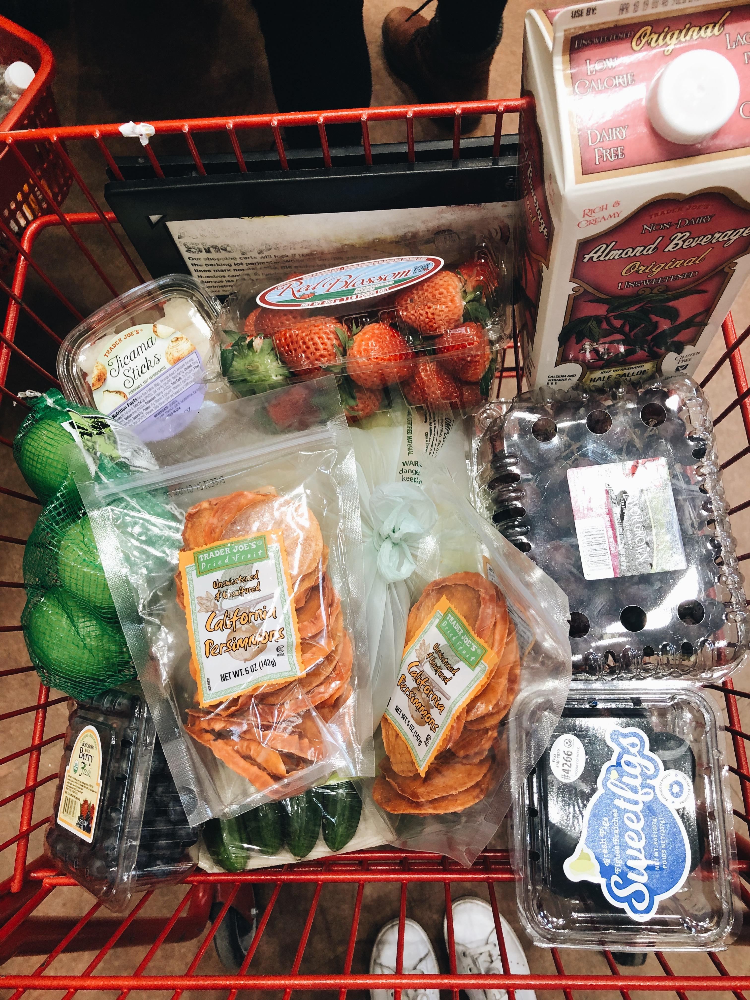

Grocery

It is challenging to buy groceries and stay on a budget in college, which is why students often gravitate towards unhealthy snacks. But...eating healthy doesn't have to be expensive! Below I have a list of the grocery stores that I go to and what I usually buy from each one! I hope this grocery list can be a useful guide!
Trader Joe's
fruit: apples, blueberries, grapes, and strawberries (I love fruits!! you can buy fruits for cheaper and in bulk at Trader Joe's which is a great way to save money!!)
fresh vegetables: broccoli, carrots, cucumbers, tomatoes, and packets of spinach or kale
frozen vegetaables: peas, corn, edamame, and spinach (buying frozen veggies saves money and lasts for months!)
lemons
hummus (great after-school snack with carrots!)
vegan pesto (can be used as a dip or healthy pasta sauce!)
eggs (I boil my eggs and bring them for lunch)
gluten free toast (or brown rice cakes if you don't have a toaster)
peanut butter
butternut squash soup (just put in the microwave for 3 mins and voila!)
quinoa
rosemary ham or turkey (good sources of protein!)
avocado (amazing on top of salads or toast)
sweet potatoes
almond milk
greek feta cheese (I buy the sheep's milk because it is less processed and better for you!)
Whole Foods
Whole Foods is definitly on the pricey side, but a few of my favorite healthy products are only sold at Whole Foods so I buy them there!
so delicious coconut milk yogurt
emmy's organics coconut cookies
purely elizabeth gluten free granola
high protein tofu
hu dark chocolate (best healthy dessert!)